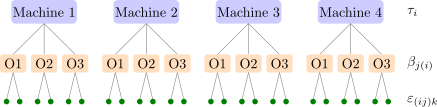

12.1 The two-stage nested design
Definition 12.1.1. Factor \(B\) is nested in factor \(A\) if each level of \(B\) occurs with only one level of \(A\). A two-stage nested (or hierarchical) design has \(a\) levels of \(A\), \(b\) levels of \(B\) within each level of \(A\), and \(n\) observations on each level of \(B\): \begin {gather*} y_{ijk} = \mu + \tau _i + \beta _{j(i)} + \varepsilon _{(ij)k} , \\ i = 1, \dots , a , \quad j = 1, \dots , b , \quad k = 1, \dots , n . \end {gather*} The subscript \(j(i)\) says that the \(j\)th level of \(B\) is a different level for each \(i\).
The labels of the nested factor are arbitrary. In the experiment of Example 12.1.3, “operator \(1\)” on machine \(1\) and “operator \(1\)” on machine \(2\) are different people, and there is no sense in which they share an effect. So there is no \(B\) main effect and no \(AB\) interaction; there is only the variation of \(B\) within each level of \(A\). Analysing such data as a two-factor factorial is a common mistake (Figure 14).

The analysis of variance
The total variation splits as \[ \sum _{i,j,k}(y_{ijk} - \bar y_{\cdot \cdot \cdot })^2 = bn\sum _i(\bar y_{i\cdot \cdot } - \bar y_{\cdot \cdot \cdot })^2 + n\sum _{i,j}(\bar y_{ij\cdot } - \bar y_{i\cdot \cdot })^2 + \sum _{i,j,k}(y_{ijk} - \bar y_{ij\cdot })^2 , \] that is \(SST = SS_A + SS_{B(A)} + SSE\), with \(a - 1\), \(a(b - 1)\) and \(ab(n - 1)\) degrees of freedom; the cross products vanish as in the one-way analysis. In computing form, with \(C = y_{\cdot \cdot \cdot }^2/(abn)\), \begin {gather*} SS_A = \frac 1{bn}\sum _iy_{i\cdot \cdot }^2 - C , \qquad SS_{B(A)} = \frac 1n\sum _{i,j}y_{ij\cdot }^2 - \frac 1{bn}\sum _iy_{i\cdot \cdot }^2 , \\ SSE = \sum _{i,j,k}y_{ijk}^2 - \frac 1n\sum _{i,j}y_{ij\cdot }^2 . \end {gather*} Compared with a crossed analysis, \(SS_{B(A)} = SS_B + SS_{AB}\): the nested sum of squares collects the variation that a factorial would split into a main effect and an interaction.
Theorem 12.1.2. In the two-stage nested design,
| model | \(E(MS_A)\) | \(E(MS_{B(A)})\) |
| \(A\), \(B\) fixed | \(\sigma ^2 + \dfrac {bn\sum \tau _i^2}{a - 1}\) | \(\sigma ^2 + \dfrac {n\sum \sum \beta _{j(i)}^2}{a(b - 1)}\) |
| \(A\) fixed, \(B\) random | \(\sigma ^2 + n\sigma ^2_\beta + \dfrac {bn\sum \tau _i^2}{a - 1}\) | \(\sigma ^2 + n\sigma ^2_\beta \) |
| \(A\), \(B\) random | \(\sigma ^2 + n\sigma ^2_\beta + bn\sigma ^2_\tau \) | \(\sigma ^2 + n\sigma ^2_\beta \) |
and in every case \(E(MSE) = \sigma ^2\). In the fixed case the side conditions are \(\sum _i\tau _i = 0\) and \(\sum _j\beta _{j(i)} = 0\) for each \(i\); random effects are independent normal with mean zero, as in Section 11.
Proof. Take the random case; the others are similar. Averaging the model, \[ \bar y_{i\cdot \cdot } - \bar y_{\cdot \cdot \cdot } = (\tau _i - \bar \tau ) + (\bar \beta _{\cdot (i)} - \bar \beta ) + (\bar \varepsilon _{i\cdot \cdot } - \bar \varepsilon _{\cdot \cdot \cdot }) , \] where \(\bar \beta _{\cdot (i)}\), the mean of the \(b\) effects nested in level \(i\), has variance \(\sigma ^2_\beta /b\). The three terms are independent, so by Lemma 11.3.1 \[ E(SS_A) = bn(a - 1)\Bigl (\sigma ^2_\tau + \frac {\sigma ^2_\beta }b + \frac {\sigma ^2}{bn}\Bigr ) = (a - 1)(\sigma ^2 + n\sigma ^2_\beta + bn\sigma ^2_\tau ) . \] Within level \(i\), \(\bar y_{ij\cdot } - \bar y_{i\cdot \cdot } = (\beta _{j(i)} - \bar \beta _{\cdot (i)}) + (\bar \varepsilon _{ij\cdot } - \bar \varepsilon _{i\cdot \cdot })\), so \(E\sum _j(\bar y_{ij\cdot } - \bar y_{i\cdot \cdot })^2 = (b - 1)(\sigma ^2_\beta + \sigma ^2/n)\). Summing over the \(a\) levels and multiplying by \(n\) gives \(E(SS_{B(A)}) = a(b - 1)(\sigma ^2 + n\sigma ^2_\beta )\). When \(B\) is fixed, \(\bar \beta _{\cdot (i)} = 0\) and the \(\sigma ^2_\beta \) terms are replaced by the corresponding sums of squares of constants. □
So \(B(A)\) is always tested against error. \(A\) is tested against error if \(B\) is fixed, but against \(MS_{B(A)}\) if \(B\) is random. The second case is the usual one, and the reason is the same as in the mixed model: a new sample of operators would change the machine means by an amount of variance \(\sigma ^2_\beta /b\).
Example 12.1.3. The surface finish of metal parts is being studied. Four machines were selected at random. Because of where the machines stand, each is run by its own operators, and three operators were chosen at random for each machine; two specimens from each operator were tested:
| machine \(1\) | machine \(2\) | |||||
| operator | \(1\) | \(2\) | \(3\) | \(1\) | \(2\) | \(3\) |
| \(79\), \(62\) | \(94\), \(74\) | \(46\), \(57\) | \(92\), \(99\) | \(85\), \(79\) | \(76\), \(68\) | |
| total | \(141\) | \(168\) | \(103\) | \(191\) | \(164\) | \(144\) |
| machine \(3\) | machine \(4\)
| |||||
| operator | \(1\) | \(2\) | \(3\) | \(1\) | \(2\) | \(3\) |
| \(88\), \(75\) | \(53\), \(56\) | \(46\), \(57\) | \(36\), \(53\) | \(40\), \(56\) | \(62\), \(47\) | |
| total | \(163\) | \(109\) | \(103\) | \(89\) | \(96\) | \(109\) |
The machine totals are \(412\), \(499\), \(375\) and \(294\), with \(y_{\cdot \cdot \cdot } = 1580\) and \(\sum y_{ijk}^2 = 111466\). This is a two-stage nested design: operators are nested in machines, since each operator works on one machine only, and both factors are random. The model is \[ y_{ijk} = \mu + \tau _i + \beta _{j(i)} + \varepsilon _{(ij)k} , \] where \(y_{ijk}\) is the finish of the \(k\)th specimen of operator \(j\) on machine \(i\), \(\tau _i \sim N(0, \sigma ^2_\tau )\) is the effect of machine \(i\), \(\beta _{j(i)} \sim N(0, \sigma ^2_\beta )\) the effect of operator \(j\) on that machine, and \(\varepsilon _{(ij)k} \sim N(0, \sigma ^2)\) the specimen error, all independent. With \(C = 1580^2/24 = 104016.667\), \begin {align*} SS_{\mathrm {Machines}} &= \frac {412^2 + 499^2 + 375^2 + 294^2}6 - C = 3617.667 , \\ SS_{\mathrm {Operators(M)}} &= \frac {141^2 + 168^2 + \dots + 109^2}2 \\ &\qquad - \frac {412^2 + \dots + 294^2}6 = 2817.667 , \\ SST &= 111466 - C = 7449.333 , \qquad SSE = 1014.000 . \end {align*}
| source | SS | df | MS | \(E(MS)\) | \(F_0\) |
| machines | \(3617.667\) | \(3\) | \(1205.89\) | \(\sigma ^2 + 2\sigma ^2_\beta + 6\sigma ^2_\tau \) | \(3.42\) |
| operators (machines) | \(2817.667\) | \(8\) | \(352.21\) | \(\sigma ^2 + 2\sigma ^2_\beta \) | \(4.17\) |
| error | \(1014.000\) | \(12\) | \(84.50\) | \(\sigma ^2\) | |
| total | \(7449.333\) | \(23\) |
For operators, \(H_0 : \sigma ^2_\beta = 0\) gives \(F_0 = 352.21/84.50 = 4.17 > F_{0.05, 8, 12} = 2.85\) (\(P = 0.013\)): operators on the same machine differ. For machines, \(H_0 : \sigma ^2_\tau = 0\) gives \(F_0 = 1205.89/352.21 = 3.42 < F_{0.05, 3, 8} = 4.07\) (\(P = 0.073\)): no significant machine effect at the \(5\%\) level. The variance components are \begin {gather*} \hat \sigma ^2_\tau = \frac {1205.89 - 352.21}6 = 142.3 , \qquad \hat \sigma ^2_\beta = \frac {352.21 - 84.50}2 = 133.9 , \\ \hat \sigma ^2 = 84.5 . \end {gather*} The estimate for machines is the largest of the three, yet it is not significant: with four machines it rests on only three degrees of freedom and is judged against the operator variation. The data are consistent with machines mattering as much as operators, but they cannot show it; more machines, not more specimens, would be needed.
Designs with more stages
The idea extends to any depth: batches, samples within batches, determinations within samples. In an \(m\)-stage nested design with all factors random, each mean square has expectation \(\sigma ^2\) plus the components of its own stage and all stages below it, each multiplied by the number of observations per level of that stage. The rule for expected mean squares (Result 11.5.1) covers nested designs if the subscripts of a nested term include those in brackets: \(B(A)\) has subscripts \(i\) and \(j\), and \(C(B)\) in a three-stage design has \(i\), \(j\) and \(k\). For example, with \(a\), \(b\), \(c\) levels and \(n\) observations, \[ E(MS_A) = \sigma ^2 + n\sigma ^2_\gamma + cn\sigma ^2_\beta + bcn\sigma ^2_\tau , \] and each stage is tested against the stage below it.
Questions on this section
Stuck on something here? Ask below and it stays attached to this topic.